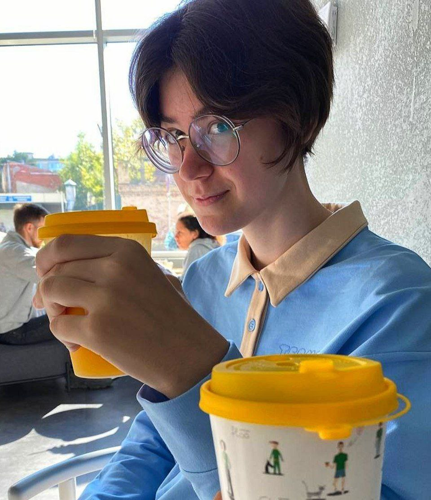
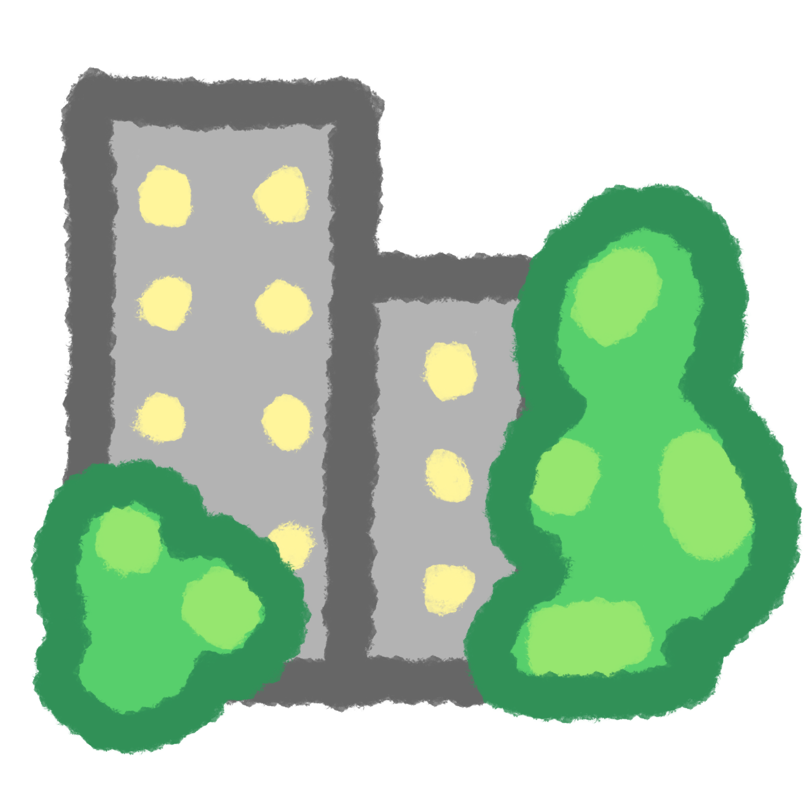

Место учебы
ФиКЛ, НИУ ВШЭ, Москва
(aka Fizzy)
"The glory of creation is in its infinite diversity and the ways our differences combine to create meaning and beauty." (Star Trek: TOS, S3E5)

ФиКЛ, НИУ ВШЭ, Москва

Родной городКоролёв, МО
Гимназия №11